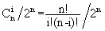

Home Page
F.A.Qs
Statistical Charts
Past Contests
Scheduled Contests
Award Contest
| Online Judge | Problem Set | Authors | Online Contests | User | ||||||
|---|---|---|---|---|---|---|---|---|---|---|
| Web Board Home Page F.A.Qs Statistical Charts | Current Contest Past Contests Scheduled Contests Award Contest | |||||||||
|
Language: 钉子和小球
Description 有一个三角形木板,竖直立放，上面钉着n(n+1)/2颗钉子，还有(n+1)个格子（当n=5时如图1）。每颗钉子和周围的钉子的距离都等于d，每个格子的宽度也都等于d，且除了最左端和最右端的格子外每个格子都正对着最下面一排钉子的间隙。
让一个直径略小于d的小球中心正对着最上面的钉子在板上自由滚落，小球每碰到一个钉子都可能落向左边或右边（概率各1/2），且球的中心还会正对着下一颗将要碰上的钉子。例如图2就是小球一条可能的路径。 我们知道小球落在第i个格子中的概率pi=pi=，其中i为格子的编号，从左至右依次为0,1,...,n。 现在的问题是计算拔掉某些钉子后，小球落在编号为m的格子中的概率pm。假定最下面一排钉子不会被拔掉。例如图3是某些钉子被拔掉后小球一条可能的路径。 Input 第1行为整数n（2 <= n <= 50）和m（0 <= m <= n）。以下n行依次为木板上从上至下n行钉子的信息，每行中'*'表示钉子还在，'.'表示钉子被拔去，注意在这n行中空格符可能出现在任何位置。 Output 仅一行，是一个既约分数(0写成0/1)，为小球落在编号为m的格子中的概pm。既约分数的定义：A/B是既约分数，当且仅当A、B为正整数且A和B没有大于1的公因子。 Sample Input 5 2 * * . * * * * . * * * * * * * Sample Output 7/16 Source |
[Submit] [Go Back] [Status] [Discuss]
All Rights Reserved 2003-2013 Ying Fuchen,Xu Pengcheng,Xie Di
Any problem, Please Contact Administrator